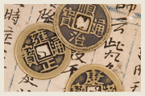

古钱币

古币是指古代金属的铸币以及它们的衍生物。古钱包括先秦时期的各类铸币和秦汉以后的各类方孔圆钱，方孔圆钱的
铸期一直延伸到清末民国初年。事实上先秦时期的实物货币，譬如夏商时代的海贝，以及仿制的贝化（货）；金属称
量货币，譬如西周时代的青铜块等等，也都包括在古币的范畴之内。
中国古代钱币历史悠久，源远流长，品种纷繁，多姿多彩，是中华民族传统文化中的瑰宝。几千年来中国的货币
文化，凝聚着中华民族的智慧与才能，创造出自成体系、光彩夺目、独具特色的东方货币文化。古钱币又称之为
泉、布、帛，孔方兄等。
第一阶段：秦汉与隋唐以铜铸币为主，是以秦“半两钱”和汉“五铢钱”为主干铢两体系阶段。
第二阶段：唐宋到明清除了铸币出现年号，宝文体系有别于前铢两体系外，还出现纸币与银本位体系。
春秋战国时期，随着商品经济发展，使在流通中要分割和鉴定成色的金属称量货币逐步不适应，而被金属铸币所取代。
从春秋时期进入金属铸币阶段到战国时期已确立布币，刀货，蚁鼻钱，环钱四大货币体系:
中原地区即赵、韩、魏三国和周王室等地，主要流行布币（例如货布）。
东方的齐国和北方的燕国 主要使用刀币。刀币分“燕明刀”和“齐刀化”二大类型。
西北方的秦国 独用环币，其形制取象于纺轮或玉壁演化而来。环币分圆形圆孔和方孔两种。
南方楚国 铸币铜贝称蚁鼻钱，由贝币演化而来。
中原地区即赵、韩、魏三国和周王室等地，主要流行布币（例如货布）。
东方的齐国和北方的燕国 主要使用刀币。刀币分“燕明刀”和“齐刀化”二大类型。
西北方的秦国 独用环币，其形制取象于纺轮或玉壁演化而来。环币分圆形圆孔和方孔两种。
南方楚国 铸币铜贝称蚁鼻钱，由贝币演化而来。
秦统一六国后，政治统一要求经济统一作基础，秦始皇顺应历史发展趋势，在统一文字，度量衡同时，也统一了货币。
规定以“黄金”为上币，以镒（20两）为单位，以圆形方孔铜钱为下币，以半两为单位。钱文“半两”与实重相符，
这种方孔圆钱从此成为中国货币的主要形式一直沿用二千多年。为何取这种形制呢?主要是环形便于携带，
而方孔穿绳索铜钱不易旋转，可防磨损。也有人认为这种形制表达了古人天圆地方的宇宙观。
秦朝方孔圆钱是世界上最早由政府法定的货币。
据说秦始皇为防备百姓造反收天下兵器铸十二金人。这势必影响铜钱的铸量。因铜价极高，货币流通量不足，
故秦半两钱价值很高。汉初发生“秦钱重（价高）难用”问题。汉承秦制沿用半两钱，但刘邦当皇帝时国家很穷，
改铸了许多小钱，先后出现“榆荚半两八铢半两，四铢半两等。一两为二十四铢，因对秦半两大幅减重，“半两”名实不符。
尤其是一种小半两，形似榆树果实而称“榆荚半两”重不足1克，直径不足1厘米。汉还允民间私铸与郡国铸币，引起币制紊乱与通货膨胀，
至汉武帝大改币制。
汉武帝即位后，“外事四夷，内兴功利”急需开辟财源。同时郡国自由铸钱，造成币制混乱，物价上涨，威胁中央财政。
于是汉武帝公元前118年下令废除汉初郡国制币权，改由中央统一铸币。设“上林三官”即钟官（掌铸钱）、
辨铜（掌原料）、均输（掌制范），组成中央铸币机构负责铸造五铢钱，也称上林钱和三官钱。五铢钱质量高，
改变了货币混乱现象，有利于中央集权和经济发展。从汉武帝起历西汉，新莽，东汉，魏、晋、南北朝到隋唐共七百多年。
五铢长期为历朝法定货币。因五铢钱轻重合宜，中国以“五铢”为主要形制的方孔圆钱还影响日本、安南、朝鲜等国。
而泰国的货币单位仍称“铢”与此不无关系。